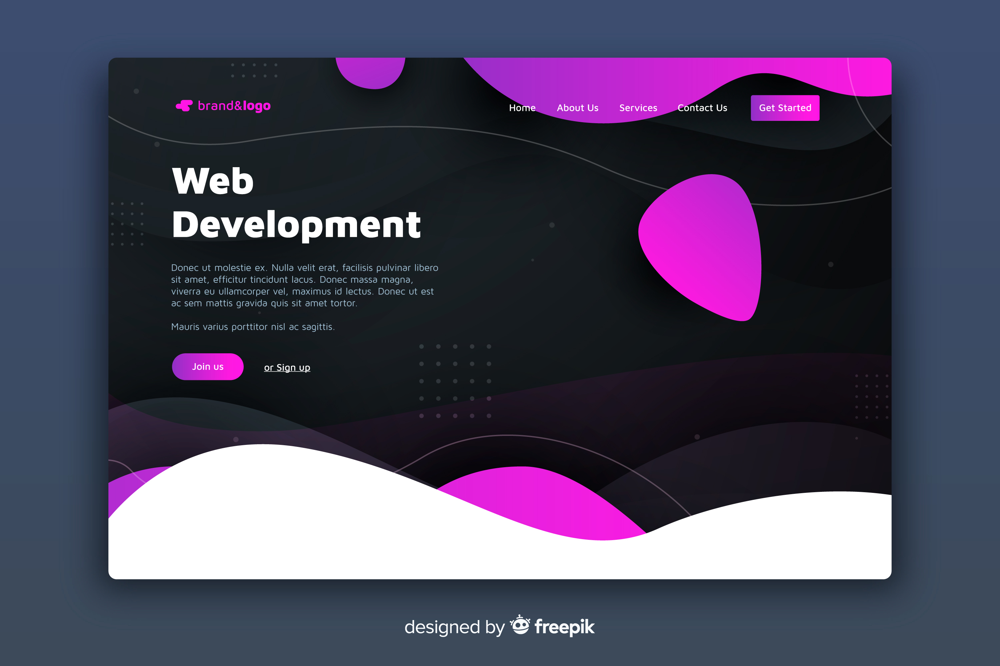

Bienvenue sur Quanticode !
Quanticode est une entreprise innovante spécialisée dans le développement web et la formation numérique. Nous mettons notre expertise au service des entreprises, startups et professionnels souhaitant renforcer leur présence en ligne ou monter en compétences dans les domaines du SEO , du DevOps , du Design et du Développement Web.
Notre équipe de développeurs passionnés accompagne les entreprises dans la création de sites web performants, sur mesure et à forte valeur ajoutée, adaptés à leurs objectifs et à leur identité. En parallèle, notre offre de formations est conçue pour transmettre des savoir-faire concrets, actuels et directement applicables, que ce soit pour monter en compétence ou pour amorcer une reconversion professionnelle.
Chez Quanticode , nous croyons en la technologie utile, à la pédagogie pratique et à l'importance d'un accompagnement humain à chaque étape de votre projet digital. De plus nous croyons fermement que la technologie doit être accessible à tous et que chacun peut devenir acteur de sa transformation numérique. C'est pourquoi nous proposons des solutions adaptées à chaque besoin, qu'il s'agisse de Développement Web, de SEO, de DevOps ou de Design .
Développement

Cœur de métier de Quanticode, le développement web est notre terrain d'expression. Nous construisons des applications modernes, performantes et évolutives , en utilisant les dernières technologies. Nos formations couvrent tout le cycle de développement : HTML/CSS, JavaScript, frameworks modernes, bases de données, API, etc
SEO

Dans un web ultra-concurrentiel, être visible est crucial. Nous formons et accompagnons nos clients dans la maîtrise du SEO pour améliorer leur position sur les moteurs de recherche, générer du trafic qualifié et renforcer leur stratégie de contenu. De la technique à la sémantique, nous couvrons toutes les facettes du référencement.
DEVOPS

L'agilité et la stabilité des systèmes sont des atouts majeurs dans un monde digital en constante évolution. Grâce à notre expertise DevOps , nous formons à l'intégration continue, au déploiement automatisé et aux bonnes pratiques de collaboration entre les équipes de développement et d'exploitation.
DESIGN
Un bon produit est avant tout un produit bien pensé pour l'utilisateur. Nous transmettons les fondements du design UX/UI , de la conception de maquettes à la création d'interfaces ergonomiques et engageantes. Nos designers travaillent également en synergie avec les développeurs pour proposer des solutions à la fois esthétiques et fonctionnelles
Nos Formations
Chez Quanticode, nous croyons que la formation est la clé pour rester compétitif dans un monde numérique en constante évolution. C'est pourquoi nous proposons une gamme de formations adaptées à tous les niveaux, du débutant au professionnel confirmé.
Ils témoignent
"Une formation de qualité, très pratique et adaptée à mes besoins. J'ai pu rapidement mettre en place les compétences acquises dans mon travail."
Marie.D - Etudiante
"J'ai fait appel à Quanticode pour la création de mon site vitrine, et je suis bluffée par le résultat. L'équipe a su parfaitement capter l'univers de mon entreprise et le traduire en un design élégant et moderne. Le site est rapide, responsive et surtout, très facile à gérer au quotidien. Je recommande les yeux fermés !"
Sarah L. - Fondatrice de L'Atelier Botanique
"Quanticode nous a accompagnés de A à Z dans le développement de notre plateforme web. Leur écoute, leur réactivité et leur expertise technique ont fait toute la différence. Le projet a été livré dans les temps, avec un excellent suivi post-livraison. C'est une équipe fiable et créative, un vrai partenaire digital."
Amine R. - CEO de NovaCom